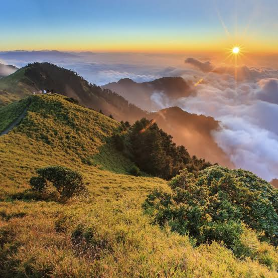
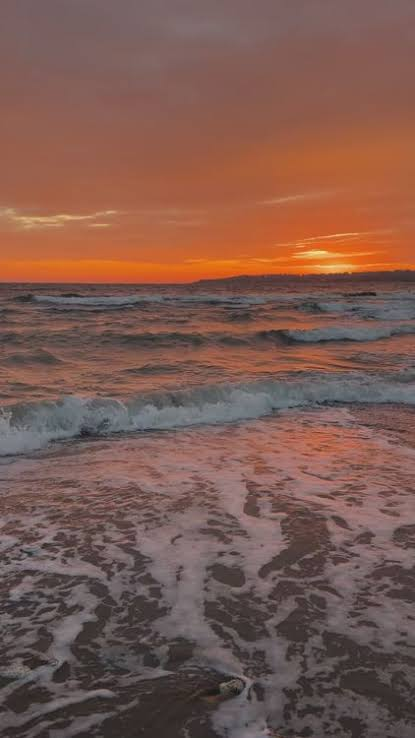

Quyosh chiqayotgan tog'lar
Tog' cho'qqilari osmon bilan tutashib, insonga xotirjamlik bag'ishlaydi. Musaffo havo, yashil yonbag'irlar va quyoshning ilk nurlari bu manzarani yanada betakror qiladi.

Dengizdagi quyosh botishi
Kun botar ekan, osmon va dengiz iliq ranglarga burkanadi. Sohil bo'ylab esayotgan mayin shamol va to'lqinlar shovqini kishiga orom beradi.

Tog' bag'ridagi ko'l
Ko'lning tiniq suvida tog'lar aks etadi. Bu sokin maskan sayr qilish, tabiatni tomosha etish va kundalik shoshqaloqlikdan uzoqlashish uchun juda mos.

Yashil o'rmon
O'rmon daraxtlari havoni tozalab, ko'plab jonivorlarga boshpana bo'ladi. Daraxtlar orasidan tushgan quyosh nurlari bu maskanga o'zgacha fayz beradi.

Shovqinli sharshara
Balandlikdan otilib tushayotgan suv atrofga salqinlik va tetiklik taratadi. Sharshara yonidagi yam-yashil tabiat esa ko'ngilни ko'taradi.

Vodiydagi sokinlik
Keng vodiylar va uzoq ufqlar tabiatning naqadar betakror ekanini eslatadi. Bu yerda sayr qilib, toza havodan bahramand bo'lish mumkin.

Moviy sohil
Mayin qumli sohil va moviy dengiz yozgi hordiq uchun ajoyib manzildir. To'lqinlar qirg'oqqa urilib, yoqimli va sokin ohang yaratadi.

Ochiq kengliklar
Cheksiz kengliklar va musaffo osmon sayohatga chorlaydi. Tabiat qo'ynida o'tkazilgan vaqt yangi taassurotlar va quvvat baxsh etadi.

Tonggi shafaq
Quyoshning ilk nurlari tabiatni asta-sekin uyg'otadi. Tongdagi sokinlik va rang-barang osmon yangi kunni ko'tarinki kayfiyatda boshlashga yordam beradi.

Yovvoyi tabiat
Tabiat bag'rida erkin yashayotgan hayvonlarni kuzatish juda qiziqarli. Ularning yashash joylarini asrash tabiat muvozanati uchun muhimdir.

Qorli cho'qqilar
Qor bilan qoplangan baland cho'qqilar qish manzarasiga ulug'vorlik bag'ishlaydi. Oppoq qor va moviy osmonning uyg'unligi ko'zni quvontiradi.

Kuzgi ranglar
Kuz kelganda daraxt barglari sariq, qizil va oltin ranglarga kiradi. Salqin havodagi sayrlar bu faslning go'zalligini yanada his ettiradi.